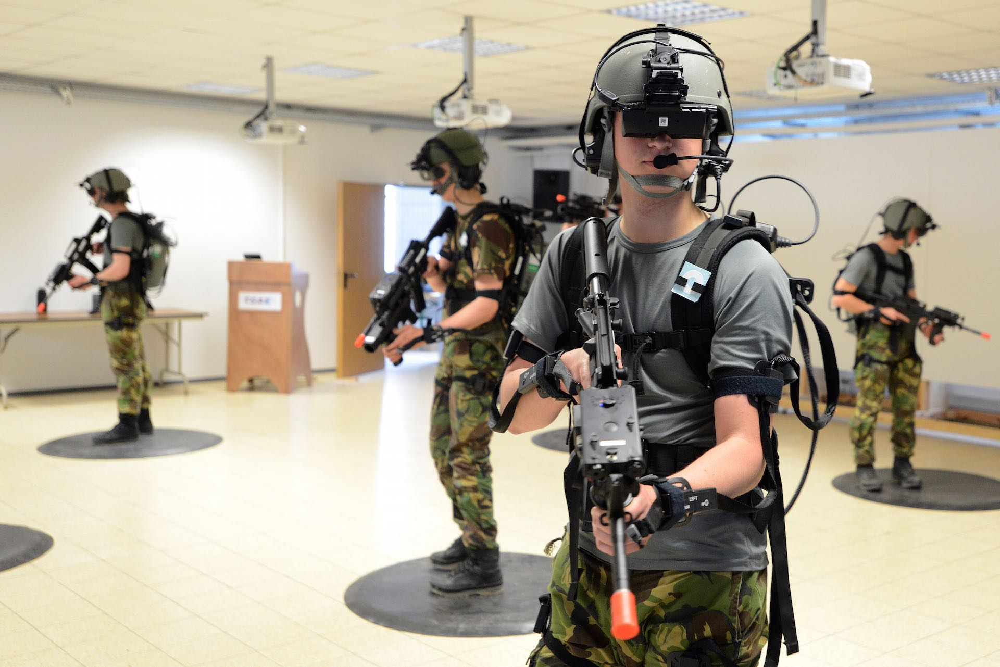

THE FUTURE OF VR
MILITARY: The VR industry has been growing within the military. It's being used mostly for training in a safe environment. It's also been used for treatment of PTSD. HEALTHCARE: Similarly to the military, VR is being used to train doctors on doing surgeries without the risk to any ral person. It's also used for practice on new surgeries. BUSINESS TRAINING: VR is growing in popularity across all types of businesses for its great us for training. It allows people to make mistakes without any harm to people or products.
Military
Healthcare
Saftey Training